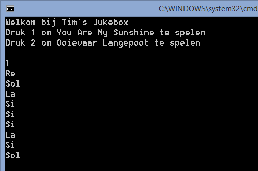
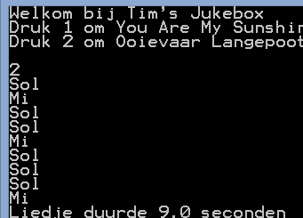

In deze opgave gaan we stap voor stap een “radio” opbouwen. We zullen daarbij werken met methoden, arrays en loops.
Muziek maken
Het wikipedia artikel over toonhoogte leert ons dat de grondtonen do-re-mi-fa-sol-la-si-do de frequenties : 264-297-330-352-396-440-495-528 hz behelzen (excuses indien dit ‘jargon’ niet klopt…ik ken even veel van muziek als van metsen).
De Console.Beep() methode laat ons toe om tonen te genereren op een bepaalde frequentie (in hz) en van een bepaalde duur (in milliseconden, i.e. 1/1000 seconde).
We kunnen dus de computer de toonladder afspelen, elke noot 1 seconde langs, als volgt:
Console.Beep(264, 1000);
Console.Beep(297, 1000);
Console.Beep(330, 1000);
Console.Beep(352, 1000);
Console.Beep(396, 1000);
Console.Beep(440, 1000);
Console.Beep(495, 1000);
Console.Beep(528, 1000);Basis toon-methoden
Zorg ervoor dat je de toonladder van hierboven als volgt kunt aanroepen:
Do();
Re();
Mi();
Fa();
Sol()
La();
Si();
Do2();Iedere methode zal dus de correcte toon afspelen gedurende 1s (je mag dit ook sneller instellen naar keuze).
Iedere “noot-methode” zal ook steeds op het scherm tonen welke noot wordt afgespeeld (doe dit als eerste in de methode) De uitvoer van voorgaande code wordt dan (het geluid moet je er maar even bij verzinnen):
Do
Re
Mi
Fa
Sol
La
Si
DoExtra 1: plaats iedere noot in een andere tekstkleur. Extra 2: kan je er voor zorgen dat de noten achter elkaar, met komma, gescheiden op het scherm komen in plaats van onder elkaar?
Octaven
Door de frequentie van een toon te vermenigvuldigen of te delen met veelvouden van 2 krijg je de tonen op andere octaven. Pas de ‘noot-methoden’ aan zodat 2 parameters kunnen meegeven worden: 1. De lengte in milliseconden dat de toon moet aangehouden worden 2. De octaaf van de toon: 1 = basis octaaf die we al hadden, 2= 2e octaaf (dus frequentie x2) 3= 3e octaaf (frequentie x 4) etc.
Als je dus de tweede octaaf wil spelen (met iedere toon om de 500ms) moet je deze als volgt kunnen aanroepen:
Do(500,2);
Re(500,2);
Mi(500,2);
Fa(500,2);
Sol(500,2)
La(500,2);
Si(500,2);
Do2(500,2);Liedjes methoden
Maak minstens 2 methoden naar keuze: iedere methode zal een liedje beginnen spelen dat je zelf hebt gemaakt (bv een bestaand kinderliedje). Hier bijvoorbeeld het begin van “You are my sunshine”: Re(); Sol(); La(); Si(); Si(); Si(); La(); Si(); Sol(); Sol();
Sol();
La();
Si();
Do1();
Mi();
Mi();
Re();
Do1();
Si();De methoden als naam “Speel[NaamLiedje]”, bijvoorbeeld SpeelYouAreMySunshine.
Extra: De Lyrics verschijnen op de juiste momenten op het scherm (dus vlak voor het afspelen van de bijhorende noot).
Radiostation
Bij het opstarten van het programma krijg je nu een menu te zien waaruit de gebruiker een liedje kan kiezen dat gespeeld moet worden. Vervolgens wordt dit liedje gespeeld en nadien wordt de vraag terug gesteld. Indien de gebruiker een onbekende keuze invoert dan zal een random liedje worden afgespeeld uit de mogelijke liedjes.

Songtime
Wanneer een liedje werd afgespeeld dan dient de methode terug te geven (als double) hoe lang het liedje heeft geduurd. Het hoofdmenu toont dit aan het einde van het afspelen:

Je kan de duur van een methode heel eenvoudig methoden als volgt, gebruikmakende van de StopWatch:
//Start
var stopwatch = System.Diagnostics.Stopwatch.StartNew();
//Voer te meten code uit
///...
//Stop
stopwatch.Stop();
double totaletijd = stopwatch.Elapsed.TotalSeconds;totaleTijd zal de totaal verstreken tijd in seconden bevatten.
Playlist editor
Maak een playlist editor aan in je radio (als extra keuzemenu voeg je “Playlist Maker” toe). Wanneer de gebruiker dit kiest dan krijgt deze alle liedjes te zien. De gebruiker kan nu invoeren welke liedjes na elkaar moeten worden afgespeeld. Je bewaard deze keuze in een array.
In het hoofdmenu komt nu ook de mogelijkheid “Speel playlist” af. Wanneer deze keuze wordt genomen dan zullen de liedjes zoals ze in de playlist staan afgespeeld worden.
Nadien wordt getoond hoe lang de playlist heeft afgespeeld in totaal.
Commando recorder
In een aparte array houdt je een log bij van alle keuzes/invoer die de gebruiker tijdens het verloop van het programma heeft uitgevoerd. (bv 1,1,3, 2, 5, etc)
Via een nieuw menuitem “Herhaal acties” worden deze acties terug uitgevoerd zodat het lijkt alsof het programma automatisch werkt!
Het zal niet zo lijken, het zal zijn!